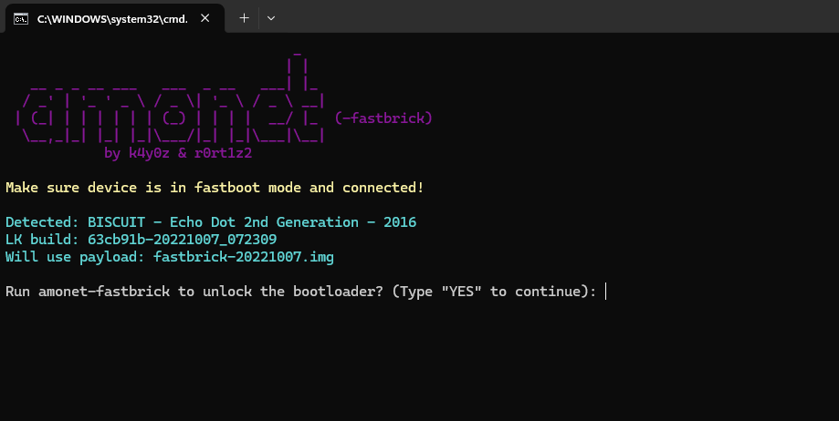
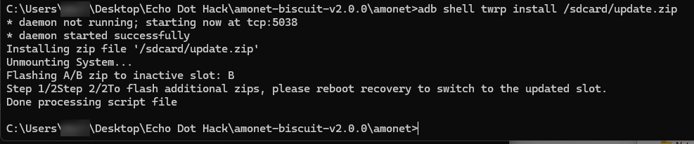
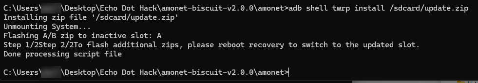
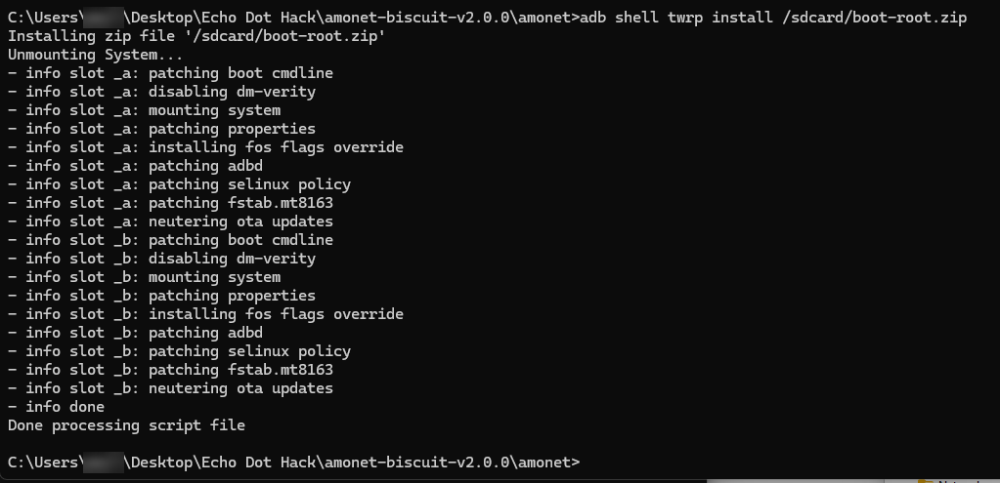
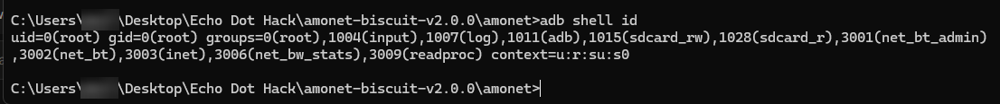
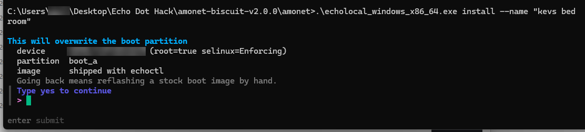
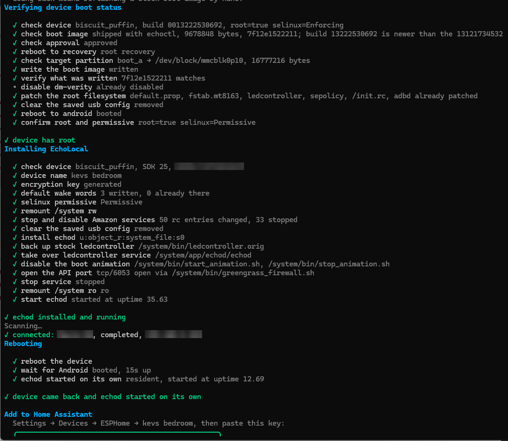
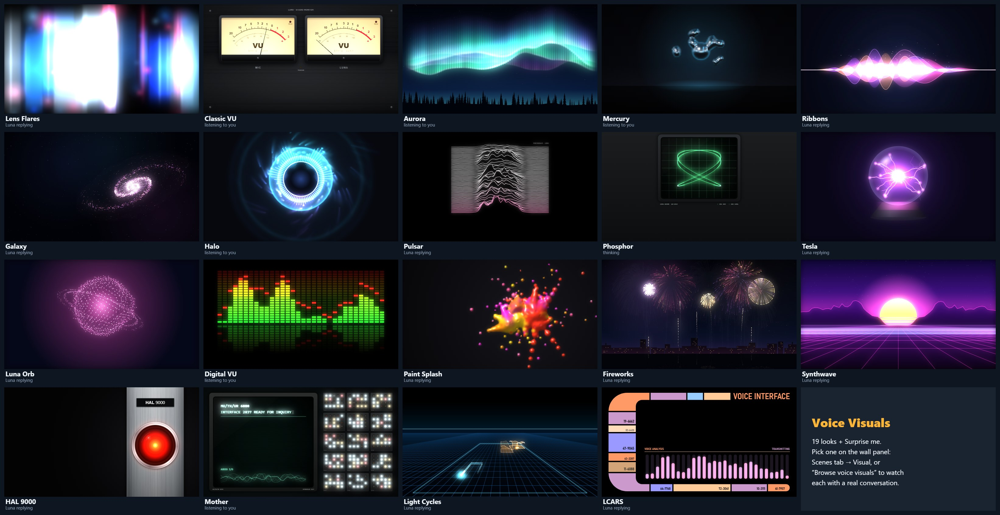

We rooted a second-generation Echo Dot, replaced Alexa with an open-source daemon and made it a Home Assistant voice satellite. The wake word runs on the Dot, the RTX 5070 in the cupboard does the listening, Gemini answers what the house can't, and a British voice called Luna replies — while the wall panel lights up in time with both voices.
Alexa-quality voice control with no Amazon and no Google in the loop for everyday commands — but free to reach the internet when you actually ask it to look something up. Home Assistant already runs the house on a Raspberry Pi, so the assistant had to plug into that, not replace it.
The Nest Hub was the first candidate and the worst: Google patched its bootloader exploit in 2021, and its chip is far too small to run speech or language models anyway. The 2016 Echo Dot 2nd generation (model RS03QR, codename "biscuit") was the opposite story — a well-documented bootloader exploit, and two open-source projects, EchoLocal and EchoMuse, that replace Alexa outright. Seven microphones, a speaker and an LED ring for a few pounds second-hand.
Google's Home MCP — a cloud service that lets an AI agent drive Google Home devices, which is the opposite direction to what we want. TypeSafe's Jev — a closed, US-hosted decision model that can't produce speech or run locally. Neither moved the design; both are noted in the build log for completeness.
Three tiers. The Dot is deliberately dumb: it listens for its wake word, streams audio and speaks the reply. Everything clever lives on machines with fans.
Runs EchoLocal. Wake-word detection on the device itself (microWakeWord), then streams to Home Assistant over the ESPHome native API. Also a media player, a Bluetooth proxy, a light sensor and an LED ring.
Runs the Assist pipeline. Its own intent engine handles device commands locally in a fraction of a second; Piper speaks the replies. Anything it can't match goes to the brain.
Whisper large-v3 transcribes on the RTX 5070 that already runs the cameras. Open questions, scenes and automations go to Gemini 3.6 Flash with Google Search.
The Dot runs Fire OS on a MediaTek MT8163. The amonet exploit breaks its bootloader, TWRP recovery flashes a known firmware into both system slots, boot-root roots it and switches off Amazon's updates, and EchoLocal swaps Alexa for its own daemon. Real terminal output from this build is below — serial numbers, folder paths and network details blurred.
The unlock itself was worked through with a separate Claude chat that knew the Dot but not this house — the build log and its screenshots come from that session. Everything from step 8 on — the network, Home Assistant and the voice stack — was built with Claude Code.
RS03QR. Nothing here applies to any other model.Everything goes in one folder, with the amonet zip extracted inside it — every command below runs from there, because that is where adb.exe lives.
certutil -hashfile update-kindle-biscuit_puffin-NS65741_user_8142_0013222530692.bin MD5
ead2ea9a9ca2fa1c708381a07c605356| File | Notes |
|---|---|
amonet-biscuit-v2.0.0.zip | The exploit, TWRP, scripts and adb.exe — from the XDA unlock thread. Use v2.0.0, not v1.1.0. |
boot-root.zip | Same thread. Roots both slots and turns ADB on. |
Fire OS 6574.1 (…13222530692.bin) | Amazon's own image, 106 MB, linked from FTVDB. |
echolocal_windows_x86_64.exe | EchoLocal release 0.0.7 — the release asset, not the green "Code" zip. |
| Ring | Meaning | When you see it |
|---|---|---|
| Blue & cyan, spinning | Normal boot | Every power-on — or the button press was missed. |
| Solid blue, stays on | Button held, stock fastboot not offered | Retry the timing, update the firmware once, or fall back to the test-point method. |
| Orange | Amazon setup mode, no Wi-Fi | After the Fire OS flash, before EchoLocal. Ignore it. |
| Solid green | Stock fastboot | The target of step 1. Also flashes green when a TWRP install succeeds. |
| Solid white | TWRP recovery | After fastbrick, and whenever you run adb reboot recovery. |
| Spinning rainbow | Hacked fastboot | Only after the exploit is installed. |
| Red, a few seconds | A TWRP install failed | Stop and read the terminal. |
fastbrick.bat after its ten-second grace period, and flashing anything that touches the preloader, LK or TrustZone partitions. Neither happens if you follow the steps: only ever flash stock firmware through TWRP, which protects those partitions.Deregister the Dot in the Alexa app first. Then hold the action button (the dot, not the microphone-mute button), plug the power in while holding, and keep holding for a good ten seconds. When the ring goes solid green, let go and connect the USB cable. Spinning blue means the press was missed — hold earlier and longer.
Double-click fastbrick.bat. It detects the Dot and prints the bootloader build — 63cb91b-20221007_072309 is the one the exploit targets. Type YES; after a ten-second grace period, don't touch the Dot, the cable or the laptop. The ring fills like a progress bar, goes green, and the Dot reboots into TWRP with a solid white ring.

With the white ring showing, confirm ADB sees the Dot in recovery, wipe, push the firmware and install it. TWRP always writes to the inactive slot.
> adb devices List of devices attached <serial> recovery > adb shell twrp wipe cache > adb shell twrp wipe data > adb push update-kindle-biscuit_puffin-NS65741_user_8142_0013222530692.bin /sdcard/update.zip > adb shell twrp install /sdcard/update.zip

The install doesn't move the active slot, so do it by hand, reboot into recovery and install the same file again. The XDA guide uses one long bcbtool line with a shell case statement — fine on Linux, fragile quoting in Windows cmd. Two plain commands do the same job.
> adb shell bcbtool get_active a > adb shell bcbtool set_active b > adb reboot recovery > adb shell twrp install /sdcard/update.zip

For each slot it patches the boot command line, disables dm-verity, makes adbd run as root, relaxes SELinux — and, importantly, neuters OTA updates so Amazon can never push firmware back onto it.
> adb push boot-root.zip /sdcard/ > adb shell twrp install /sdcard/boot-root.zip

adb reboot. Blue and cyan spin for a while, then it settles on orange because there's no Wi-Fi — ignore it; it never gets set up with Amazon. Our first su -c id failed with "su: not found": boot-root doesn't install an su binary, it makes the ADB shell itself root.

uid=0(root) with an su SELinux context — unlocked and rooted.We first downloaded echolocal-main.zip from GitHub's green Code button — that's the source code, not the program; the program is a release asset. Then we typed the device name without quotes, so cmd split it into two arguments.
> .\echolocal_windows_x86_64.exe install --name "kevs bedroom"

boot_a and warns that going back means flashing a stock boot image by hand.It asks for the Wi-Fi name and password, flashes its own boot image, stops every Amazon service, opens the API port and reboots the Dot to prove its daemon starts on its own.

echod installed, API on tcp/6053, rebooted, and echod came back on its own. The ESPHome encryption key printed at the bottom is cropped out.Home Assistant talks to the Dot on port 6053, so the two must be able to see each other. The Dot had joined the mesh Wi-Fi, which runs as a second router with its own network behind NAT. Not knowing the house, the unlock chat's build log suggested switching the mesh to bridge mode — but no mesh switching was ever needed: the Pi running Home Assistant is dual-homed, wired to the main router and also joined to the mesh, so it reached the Dot directly. (Bridge mode is still the general fix if your Home Assistant can't see the Dot on another subnet.)
Then Settings → Devices & services: "kevs bedroom" appears as a discovered ESPHome device. Paste the encryption key, pick an Assist pipeline and a wake word on the device page, say it — and the ring lights up.
Hold while connecting power: Volume Up → TWRP (white). Volume Down or Action → hacked fastboot (rainbow). Mute with USB → preloader USB download, for emergency unbricking only.
Don't keep power-cycling it — the preloader counts failed boots per slot and gives up when both run out. Go to TWRP with Volume Up and reinstall Fire OS to the inactive slot, or rerun the EchoLocal install. Ten seconds, versus an opened case.
Possible, but not a button press: boot TWRP, install the Fire OS zip to both slots again without boot-root, and it boots stock Fire OS 6 with the exploit still underneath.
The unlock session's own write-up: every step with the terminal output, the LED table, recovery and sources. Serial numbers, folder paths, network addresses and the Wi-Fi name are redacted, and a closing page of publication notes corrects the network advice for this house.
Nothing leaves the Dot until it hears its wake word. After that the audio travels to Home Assistant, over to the GPU server for transcription, through the house's own intent engine — and out to Gemini only if the house can't answer.
EchoLocal runs microWakeWord models on the Dot, one in each of its two assistant slots: a community-trained "hey luna", pushed to it over ADB, and "okay nabu", Home Assistant's own wake word, which came with EchoLocal. Until one fires, no audio leaves the device; after it fires, audio streams to Home Assistant over the ESPHome API. Why these two, and not the original "okay computer", is in Better ears.
Speech-to-text moved off the Pi's CPU — where even the small models were slow and error-prone — onto the GPU server that already runs the Frigate cameras. faster-whisper with the large-v3 model runs in its own Docker container behind the Wyoming protocol: transcriptions back in under a second, and the 12 GB card is still half free with the camera detector running alongside. The Pi's small model stays configured as a fallback. One Windows-server snag: Docker Desktop's credential store refuses image pulls over SSH, so the image is pulled once at the console and everything else is driven remotely.
Home Assistant's own intent engine gets the first go — "turn off the landing light" is matched and done locally in a fraction of a second. Anything else goes to scene_ai, a custom conversation agent, which hands the request to a small service on the Pi that asks Gemini 3.6 Flash with Google Search grounding. It can build scenes and automations (every entity it names is checked against the real device list before anything runs), answer questions about the house from a live state snapshot, look things up on the web in two to three seconds, and answer "near me" questions from the location of whoever is asking. Anything that touches the alarm needs a spoken "confirm".
Piper's British en_GB alba voice runs on the Pi, and the Dot fetches the reply as one clip once Piper has finished it. That wait is why the words reach the wall panel a beat before Luna speaks. Streamed delivery would start her sooner; our first attempt at switching it on didn't take (field note 03).
Each wake word can route to its own pipeline with its own copy of the agent — the same brain and voice, but "near me" follows the right phone. No speaker recognition, no training: the wake word is the identity. The Dot sits in Kev's room, so both of its words go to his pipeline; Mom's is built and waiting for the Dot planned for her room.
Approximate, measured on this system. The Dot starts speaking about 0.26 s after Piper finishes, and Piper on the Pi needs about 0.35 s per second of speech — so long answers are where the lag builds up. Moving Piper onto the GPU is next.
Four places, each doing what it's good at: tiny wake-word models on the devices, the heavy listening on the RTX 5070, fast sentence-matching and Luna's voice on the Pi, and the open questions in the cloud.
| Model | Job | Runs on | Details |
|---|---|---|---|
| microWakeWord — "hey luna", "okay nabu" | Wake word | The Echo Dot | Tiny on-device models run by EchoLocal. Cutoffs set from the Dot's own logs: 0.40 for "hey luna" and 0.80 for the much stronger "okay nabu". Nothing leaves the Dot until one fires. |
| Whisper large-v3 via faster-whisper | Speech → text | RTX 5070 server, Docker | linuxserver/faster-whisper:gpu, English, beam size 1, served to Home Assistant over the Wyoming protocol. Under a second per request. It shares the 12 GB card with the camera detector — about 5.8 GB in use with both loaded. |
| Whisper tiny (int8) via faster-whisper | Fallback speech → text | Raspberry Pi 4 CPU | Still configured, for when the server is off. The Pi started on the base model, then tiny for speed, before the move to the GPU. |
| Home Assistant intents | Device commands | The Pi | Sentence matching rather than a neural model: "turn off the landing light" is matched and done in a fraction of a second and never leaves the house. |
| Gemini 3.6 Flash | Questions, scenes, automations | Google, in the cloud | Temperature 0.2, no thinking budget, Google Search grounding; about two seconds an answer. Paid tier, so prompts aren't used for training. It replaced Claude Opus 5, whose 10–30 seconds a turn was too slow for a voice assistant. |
Piper — en_GB alba (medium) | Text → speech: Luna's voice | The Pi's CPU | Served over Wyoming. About 0.35 s of synthesis per second of speech, which is why it's the next thing to move onto the 5070. |
| microWakeWord — "alexa" | Keeping the panel out of the way | Wall-panel laptop, in the browser | The panel's own satellite listens for a word nobody says any more, so the Dot always answers and the panel stays a display. |
The same RTX 5070 also runs Frigate's object detection for the doorbell cameras. Next in line for it: Piper, to take the synthesis wait out of long answers, and possibly a local language model as an offline fallback for Gemini.
The Dot worked on day one — close up, some of the time. Getting it to hear across a bedroom and answer every time took these.
internal_url. That pointed at the wall panel's LAN-only HTTPS name, which the Dot's network can't resolve — so playback failed without an error.internal_url at the Pi's plain LAN address. The panel keeps its secure name; the Dot gets an address it can reach.whole: wait for Piper to finish the entire reply, then play it. We set it to streaming in the Dot's config, but EchoLocal only knows whole and stream, so it quietly kept waiting for the whole clip, and Home Assistant showed the setting as "unknown". We only found out later, reading EchoLocal's source.stream is the right value, but EchoLocal warns that a streamed reply can gap if audio arrives late, so it needs a live test first. Moving Piper onto the GPU (above) is the bigger win.center — one microphone out of seven — at 20 dB of gain, with wake thresholds tuned for close range. The logs showed "hey luna" scoring 0.95 up close but under 0.6 at distance.beamformer mixing (Amazon's own far-field filters, aimed at the loudest direction), gain up to 28 dB, the "hey luna" cutoff lowered to 0.40, and "okay computer" replaced by the far stronger "okay nabu". "Hey luna" now works from across the room most of the time, and "okay nabu" woke it on all three of its first tries. How we got there, step by step ↓At first Luna only heard you from arm's length. Three settings on the Dot got her hearing across the room: which microphones it listens with, how much it amplifies them, and how sure it has to be before it wakes. A fourth change, a better-trained wake word, made it dependable. Each change was checked against the Dot's own logs rather than guessed. If your Echo, or any voice satellite, only hears you up close, work through them in this order.
EchoLocal keeps its settings in /data/misc/echolocal/state.json on the Dot, and the same controls appear on the device's page in Home Assistant. Ours showed the problem straight away: microphone mixing on Center mic, 20 dB of gain and a wake cutoff of 0.85.
The Dot also logs every wake attempt with the score its wake-word model gave the phrase, from 0 to 1, and the cutoff it had to beat. That one line tells you whether the fault is the microphones, the cutoff or the model:
> adb shell "logcat -d | grep echolocal | grep -i wake" wake detected slot=2 id=hey_luna peak=0.988 crossing=0.870 cutoff=0.85
Reading the logs and the file needs adb: over USB, or over Wi-Fi once EchoLocal's remote-adb switch is on.
Center mic means one microphone out of the Dot's seven. We switched mixing to Beamformer, which runs Amazon's own far-field filters, the same ones a stock Alexa relies on: eight listening directions built from four of the seven microphones, aimed at whichever direction is loudest. Home Assistant offers Center mic, Delay and sum (EchoLocal's own mix, which uses all seven microphones in six directions) and Beamformer.
Played back on recordings of Kev's voice, the two aimed mixes came out close: delay and sum slightly ahead up close, the beamformer holding on to more of the far attempts. So the beamformer stayed.
20 dB went to 24, then 28, with a test from across the room after each. More gain lifts a quiet, distant voice, but it lifts the room's hiss and the TV too, so we stopped at 28; the control goes to 59. Levelling and echo cancellation stayed on, and the separate noise-reduction switch stayed off.
Past that point, don't expect more volume to rescue a distant voice. The wake-word model scores how far your voice stands above the room, so a boost that lifts the noise with it changes almost nothing: on the bench, a synthesised "hey luna" about 24 dB above the room's noise woke the Dot and one about 18 dB above didn't, at every level of amplification we tried. What helps is whatever raises your voice over the room: aiming the microphones, turning the TV down, facing the Dot.
With the beamformer listening, "hey luna" still scored 0.99 up close but only 0.59 and 0.62 from further back, against a cutoff of 0.85: the Dot was hearing the phrase and throwing it away. At a cutoff of 0.55 every attempt woke it, but the two furthest only just (they crossed at 0.553 and 0.554), so it went down to 0.50 for some margin, and later to 0.40.
That last step was for misses nobody could see. The Dot only logs a near miss once the score reaches 0.50, so with the cutoff at 0.50 a failed attempt left no trace at all. At 0.40 a quieter attempt still wakes it, and ordinary speech is nowhere near: on the bench, "what time is it" scored 0.06 on the same model.
Two traps. Despite the name wake word sensitivity, a lower number is more sensitive, because it is the score the phrase has to beat. And Home Assistant's slider stops at 0.50, so anything lower has to go in state.json.
Every wake word is its own small model, and some are trained far better than others. "Okay computer" barely registered from a distance however it was tuned, and it twice woke on Luna's own reply ("7:46 PM"). Each time it cut her off and left the Dot listening for fifteen seconds, deaf to a real "hey luna". It was switched off.
In its place went "okay nabu", Home Assistant's own wake word, trained by the author of microWakeWord and already on the Dot. In Kev's first test it woke three times out of three, including from across the room, scoring 0.88 to 0.995 against a cutoff of 0.80. It's now the one to use from a distance; "hey luna" stays in the first slot.
Keep the word you use in slot 1. In EchoLocal 0.0.7, if slot 1 is empty, a word in slot 2 is heard but the turn fails with a red ring: the Dot looks it up in the wrong place.
echod reads state.json only when it starts, so every edit was followed by a reboot and two checks: the new value is still in the file (echod quietly resets an invalid one, such as a misspelt mixing mode, to center), and the uptime is a few seconds, proving the Dot really restarted. Then test again from the far spot and read the scores.
"microphone": { "gain": 28, "mixing": "beamformer", "leveling": true, "cancel": true, "denoise": false }, "wake": { "words": [ { "id": "hey_luna", "threshold": 0.4 }, { "id": "okay_nabu", "threshold": 0.8 } ] } > adb reboot > adb shell cat /proc/uptime 18.00 46.08
Then prove it in the room, not only on a recording. We built a bench on the PC that replays raw recordings from all seven microphones through the Dot's own mixes and wake-word models. On it, a better-trained community "hey luna" woke on 11 of Kev's 11 recorded attempts, against 4 for the one on the Dot. Live, it wouldn't wake from across the room and once woke by itself, so the old model went back. Nothing changes on the Dot on the bench's word alone.
Kev still had to raise his voice now and then, so we went through EchoLocal's source (it's open, and written in Go) and built a test bench on the PC that runs the Dot's own processing on raw recordings. Every sound takes this path:
It sits low after every reply, which made it the first suspect, and for an evening an automation reset it after each one. On the bench it made no difference: the model scores your voice against the room, and levelling lifts both. The automation is gone.
While Luna speaks or music plays, wake detection hears only the echo-cancelled centre microphone. Interrupting her means being heard by one microphone out of seven.
Score the wake word in every direction at once instead of only the loudest, cancel the echo on more than one microphone, log every attempt's score, and train a "hey luna" on Kev's own voice. None of it is started: the bench has to agree with the room first.
When the Dot starts a conversation, the wall panel — a laptop in kiosk mode — fades to a full-screen visual with the transcript, and fades back five seconds after Luna finishes. It follows the Dot's state live: listening, thinking, replying.
The look Kev wanted was the "Lens Flares" skin from the Voice Satellite card. The card can't show an ESPHome satellite's transcript, so its algorithm was lifted out of the card's JavaScript and rebuilt as a standalone canvas overlay: anamorphic blue and rose streaks, bokeh dots, and a three-pass blur for the bloom.
Browsers only allow the microphone on a secure page, so the panel loads Home Assistant through a LAN-only HTTPS name: local DNS points it at the Pi, and Caddy serves it with a real Let's Encrypt certificate issued over a DNS challenge — nothing exposed to the internet. A Chromium "treat as secure" flag was tried first and simply didn't work in kiosk mode.
The panel's mic barely hears the Dot's small speaker across the room. But Home Assistant records every assist run, including the URL of the exact reply audio. The moment the Dot starts replying, the panel fetches that same audio, analyses it — a 20 ms loudness envelope, a 32-band spectrum and the waveform — and plays the analysis back in time with the Dot, starting 0.3 s after the audio is ready (measured against the Dot's own logs). Every syllable she speaks lands on screen.
Lens Flares became one skin of a small engine: shared audio analysis (512-point FFT, 32 bands from 80 Hz to 7 kHz, syllable-onset detection), a renderer with bloom, and eleven skins that each draw a frame in a few milliseconds. Four more followed on request: a digital LED spectrum analyser, Paint Splash (after the wall panel's own paint-splash screensaver), Fireworks and Synthwave. Then four from the films: HAL 9000's red eye from 2001 and MOTHER's terminal from Alien, which Kev asked for, plus Tron's light cycles and a Star Trek LCARS console, which Claude picked for him. The choice is a Home Assistant helper, set from the Scenes tab or a gallery page with live previews and a full-screen demo — or Surprise me, a different one every conversation. A small loader checks for new versions and hot-swaps them between conversations, dodging Home Assistant's month-long cache on local files. If a skin ever errors, the panel falls back to Lens Flares.
EchoLocal publishes the Dot to Home Assistant with three things the panel needs: the satellite's state (idle, listening, thinking, replying), a last heard sensor holding Whisper's transcript of what you said, and a last reply sensor holding Luna's answer. The overlay is a small script loaded into the wall-panel dashboard, so it reads those straight from the page's own live Home Assistant connection, several times a second — no token, no extra server.
The visual is a canvas filling the screen; the words are a separate HTML layer on top of it. When a conversation starts it remembers the previous turn's text so nothing stale flashes up, then shows "Listening" or "Thinking", your words when Whisper's transcript lands, and Luna's the moment the reply exists. Each visual places the text where its art isn't — beside Lens Flares and Galaxy, above the meters and the aurora, over the ribbons — in white with a soft shadow, warm amber on the VU panel, or green terminal type on the oscilloscope. Long answers step down a size, and everything fades five seconds after the Dot goes quiet.
The words always arrive a beat before Luna speaks: Home Assistant has the reply text as soon as Gemini answers, while the Dot waits for Piper to finish the audio.
Your voice comes from the panel's own microphone. The browser's Web Audio analyser gives a 1024-point FFT of every frame, which becomes a loudness level, 32 bands from 80 Hz to 7 kHz (with automatic gain, so near and far speech both fill the range) and a 20 ms slice of the waveform.
Luna's voice is too quiet for that microphone across the room, so the panel uses her actual reply instead. Home Assistant keeps a record of every assist run, including a link to the reply audio; the moment the Dot starts replying, the panel fetches that same file, decodes it and analyses it into 20 ms frames of loudness, spectrum and waveform. Those frames are then played back against the clock, starting 0.3 s after the audio is ready — the delay measured between Home Assistant and the Dot's own logs — so each syllable lands as she says it.
Both feed the same frame builder, 30 times a second: a fast level (crisper for Luna, whose audio is known in advance), a slow level for drifting and bloom, the smoothed bands and waveform, and a syllable detector that fires on sudden rises. If neither source is available, the Echo's room-level sensor and then a gentle organic motion keep it alive.
| Visual | Driven by |
|---|---|
| Lens Flares | The fast level lifts the streaks' height and brightness; the slow level sets the drift and the bloom. |
| Classic VU | Raw loudness through real VU ballistics — the MIC needle for you, LUNA for her — with a peak lamp above +0 VU and an amber lamp while she thinks. |
| Aurora | Each voice brightens its own curtains, green for you and violet for Luna; every syllable sends a ripple along them. |
| Mercury | Loudness swells the core and pushes the droplets out; the bands size them; syllables fling new drops that flow back; thinking pulls everything into one gold drop. |
| Ribbons | Five band groups set five ribbons' amplitude; syllables shed sparks. |
| Galaxy | Loudness spins it up and brightens the arms; syllables send shockwaves through them. |
| Halo | The 32 bands, mirrored, become 72 bars; syllables flash the ring; thinking starts a spinner. |
| Pulsar | Every 55 ms the current spectrum becomes a new ridge, so the plot scrolls through the last three seconds of voice. |
| Phosphor | The waveform itself: a triggered trace for your voice, an X-Y figure for Luna's, a 3:2 Lissajous while she thinks. |
| Tesla | Loudness sets how many filaments burn and how thick; syllables crackle off side branches. |
| Luna Orb | The bands shape the sphere by latitude; syllables ripple across its surface; loudness lights the lines between its points. |
| Digital VU | The 32 bands on a 40 dB LED scale, tilted toward the treble so every column moves with speech; red peak caps hold for 0.6 s, then fall; a scanner sweeps across while she thinks. |
| Paint Splash | Every syllable throws a splash sized by its strength, and sustained loud speech adds spray; cool paint for you, hot paint for Luna; the paint swirls while she thinks and leaves fading stains where it settles. |
| Fireworks | Every syllable launches a shell; its strength sets how high it climbs and how big it bursts; loudness sets the pace of the barrage, with gold shells while she thinks. |
| Synthwave | The bands, mirrored out from the sun, raise the mountains; the bass thickens the sun's stripes; loudness speeds the grid; each syllable sends a bright wave rolling toward you. |
| HAL 9000 | Luna's loudness sets how hot the red eye burns and how far its bright core spreads, and each syllable flickers it. Your voice adds a cool rim of light to the lens; while she thinks, the eye breathes slowly and its centre turns amber. |
| Mother | The wall of lamps chatters faster as either voice gets louder, each column following its own slice of the spectrum, and every syllable throws a cluster on. The terminal types its ready line as you start, traces the live waveform along its foot, and fills a progress row while she thinks. |
| Light Cycles | Whoever is speaking rides faster and turns 90° on each syllable. The wall behind their cycle is as tall as the voice was loud, so the trails are the conversation's waveform in 3-D. Gold rings roll across the Grid while she thinks. |
| LCARS | The 32 bands drive a row of 28 rounded bars, blue for you and lavender for Luna. Syllables flash a sidebar block and roll the readouts; while she thinks, the bars and blocks chase in gold. |
This page runs the same engine as the panel, fed by a real recording of Luna's voice analysed into 20 ms frames.
Metaballs built from the usual r²/d² fields go flat wherever drops merge, so the chrome reflections broke into hard bands. A bounded kernel — (1 − d²/R²)³ with R = 2.2 r — gives a surface within a few percent of a true sphere for a lone drop, and bulges smoothly where drops join. Then the studio "environment" it reflects had to be made smooth, with a horizon that curves like a real camera's.
Additive light saturates fast: the first Halo turned into a solid white disc and Ribbons blew out to white in the middle. Every skin was tuned frame by frame against its three states — listening, thinking, replying — with cyan for you, gold for thinking and rose for Luna running through the first fifteen. The four film skins keep their films' own colours: HAL's red, MOTHER's phosphor green, Tron's cyan and orange, and the LCARS palette.

All nineteen, each caught mid-conversation. The first eleven went to Kev's phone as a sheet like this while he was at work; the next four were his requests, and so were HAL 9000 and Mother. Light Cycles and LCARS were Claude's picks.
The whole visual system (the engine, all nineteen skins, the chooser and the tests) written as one copy-ready prompt, carrying the numbers and lessons that took several rounds to get right.
The hard parts — the unlock, the local stack, per-person pipelines, far-field hearing, the fixes above — are solved, so every extra second-hand Dot drops into a working system in about twenty minutes.
Kitchen, living room, Mom's room, the landing and the hall. Each one gets a Home Assistant area, so "turn the lights on" means this room — and with a wake word per person, every command carries who and where. Six speakers also means announcements, intercom and alarm audio everywhere.
Every Dot is also a Bluetooth proxy that advertises its own beacon. Enough of them make BLE trilateration possible (Bermuda and the BLE Positioning System) — and the Roomscribe 3D scan gives each Dot's true position, so the Dots can calibrate against each other. Realistically room-level, not centimetres.
Piper onto the RTX 5070 to take the synthesis wait out of long answers, and streamed replies on the Dot once a live test shows they don't gap. And Gemini gets only the context each question needs, with the location cut to a town.
The settings are done; the rest needs code. EchoLocal is open source, so the plan is to listen in every direction at once, cancel the echo on more than one microphone and train a "hey luna" on Kev's own voice, each change proven in the room before it stays.
Credits: the amonet exploit and TWRP port by k4y0z and r0rt1z2 (XDA unlock thread); EchoLocal by ygelfand; EchoMuse by wilbowes; the "hey luna" wake-word model by Tater Totterson and "okay nabu" by Kevin Ahrendt; the Voice Satellite card for the original Lens Flares look; Home Assistant's Assist, Wyoming, faster-whisper, Piper and microWakeWord projects.
Seven microphones, a speaker and an LED ring, answering to two wake words, thinking with a GPU and a search engine, and showing every syllable on the wall.